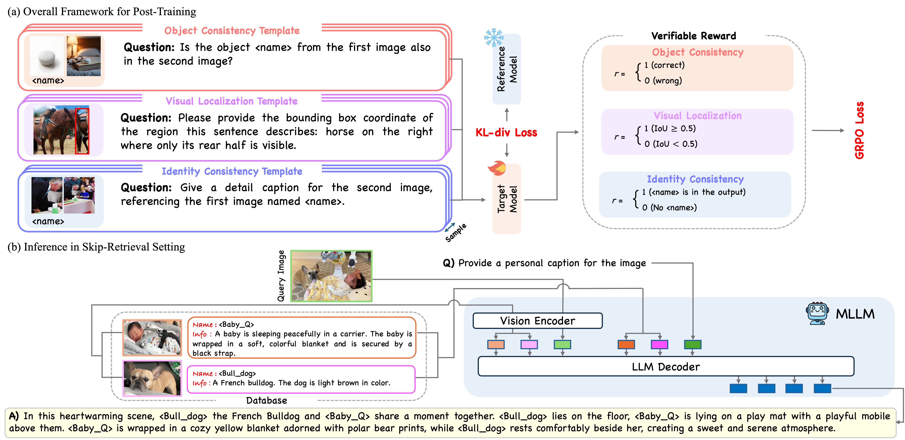

|
Hi, I'm a fourth-year Ph.D. candidate in ECE at Seoul National University, working in the DSAIL Lab. I research computer vision and multi-modal reasoning. My work primarily explores post-training of generative models. I'm deeply interested in advancing multi-modal AI systems in more expressive and personalized ways.
Email / CV / Google Scholar / Github |

|
News
[2025/09] One paper got accepted to NeurIPS 2025 Conference![2024/11] One paper got accepted to IJCV 2024 Journal!
[2024/07] One paper got accepted to BMVC 2024 Conference!
[2024/07] One paper got accepted to ECCV 2024 Conference
Conferences
|

|
RePIC: Reinforced Post-Training for Personalizing Multi-Modal Language Models
Yeongtak Oh, Jisoo Mok, Dohyun Chung, Juhyeon Shin, Sangha Park, Johan Barthelemy, and Sungroh Yoon Neural Information Processing Systems (NeurIPS), 2025 project page / arXiv We propose RePIC, a reinforced post-training framework that outperforms SFT-based methods in multi-concept personalized image captioning by enhancing visual recognition and generalization through reward templates and curated instructions. |

|
ControlDreamer: Stylized 3D Generation
with Multi-View ControlNet
Yeongtak Oh*, Jooyoung Choi*, Yongsung Kim, Minjun Park, Chaehun Shin, and Sungroh Yoon * Equal Contribution British Machine Vision Conference (BMVC), 2024 project page / arXiv ControlDreamer enables high-quality 3D generation with creative geometry and styles via multi-view ControlNet. |

|
Efficient Diffusion-Driven Corruption Editor for Test-Time Adaptation
Yeongtak Oh*, Jonghyun Lee*, Jooyoung Choi, Uiwon Hwang, Dahuin Jung, and Sungroh Yoon * Equal Contribution European Conference on Computer Vision (ECCV), 2024 project page / arXiv We propose Decorruptor to enhance the robustness of the diffusion model and accelerate the diffusion-based image-level updates. |
Journals

|
On mitigating stability-plasticity dilemma in CLIP-guided image morphing
via geodesic distillation loss
Yeongtak Oh, Saehyung Lee, Uiwon Hwang*, and Sungroh Yoon* * Equal Corresponding International Journal of Computer Vision (IJCV), IF: 11.6, 2024 project page / arXiv We have enhanced a range of CLIP-guided image morphing baselines through the implementation of our proposed inter- and intra-modality regularization losses, effectively addressing the SP dilemma. |

|
A deep transferable motion-adaptive fault detection method for industrial robots using a residual–convolutional neural network
Yeongtak Oh, Yunhan Kim, Kyumin Na, and Byeng D. Youn ISA Transactions, IF: 5.9, 2022 We present a deep learning-based motion-adaptive fault detection method for industrial robots using torque ripples. |
Preprints

|
Style-Friendly SNR Sampler for Style-Driven Generation
Jooyoung Choi*, Chaehun Shin*, Yeongtak Oh, Heeseung Kim, and Sungroh Yoon * Equal Contribution arxiv, 2024 project page / arXiv We propose the Style-friendly SNR sampler, which aggressively shifts the signal-to-noise ratio (SNR) distribution toward higher noise levels during fine-tuning to focus on noise levels where stylistic features emerge. |
Talks
[2023.08.25] Recent Trends of Generative models in 3D vision[2024.11.27] Image-Inversion of Diffusion Models
|
This page is borrowed from Jon Barron's webpage. |